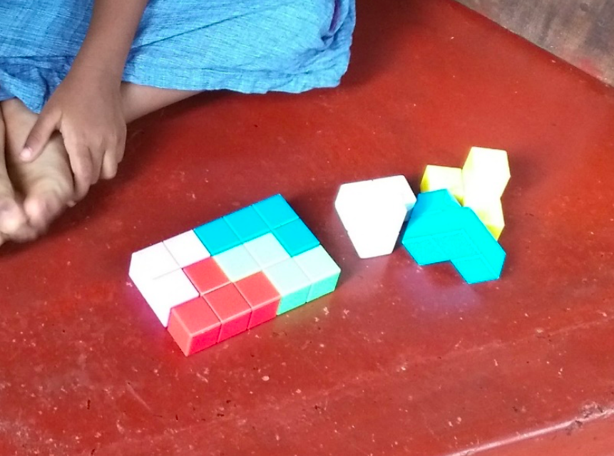
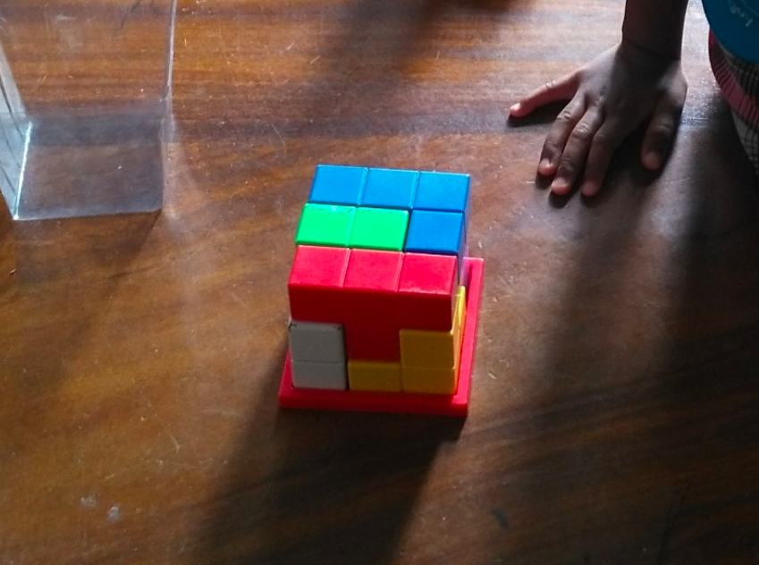
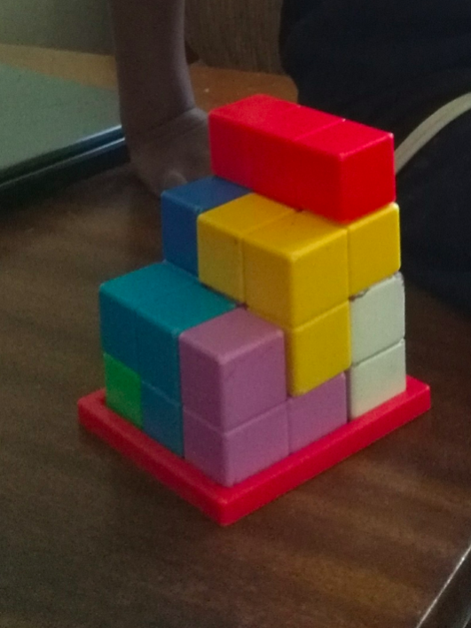
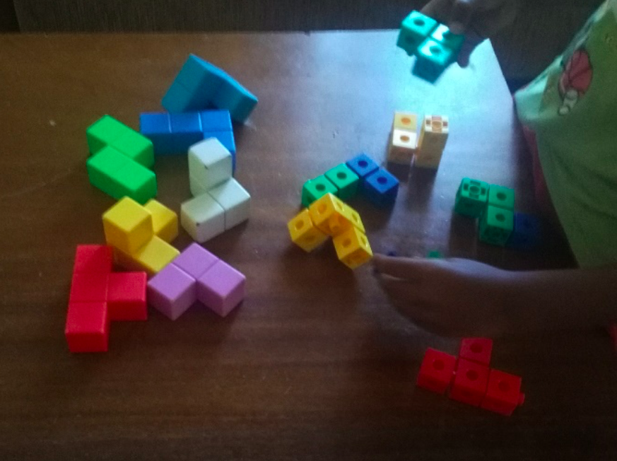
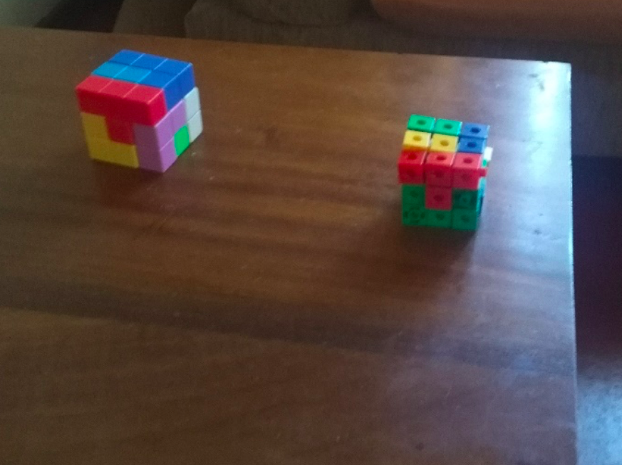

Piet Hein was a Danish scientist who lived from 16 December 1905-17 April 1996.
Piet Hein was a
Read more about Piet Hein
Source: Wikipedia
Listen to what others say about the Soma Cube
ARCHITECTS
Chethila and Lakmini Architects with two kids Central Engineering Bureau and Urban Planning.
As parents we have found the Soma cube to be a wonderful toy to help our two children become more adept at visual thinking. As architects we have also found it to be a powerful tool to help us better understand how to solve problems. It is a truly special toy that all can benefit from.
SENIOR LECTURER
Rangika and Charitha Senior Lecturer in Cvil Engineering, University of Moratuwa a Medical Doctor with two kids .
Having two young children and working as a doctor and civil engineer, we have found this toy to be a great way to entertain them and at the same time help them to learn how to solve problems. It’s a fun and healthy game for all to play and we highly recommend it to everyone!
SENIOR LECTURER
Samudra Senarath, Senior Lecturer, Department of Educational Psychology
For all of the activities it is important to encourage the children to think about the shapes that they construct and not just build hoping for the best. This is why it is best to issue only a single card a time so that they don’t just stumble upon a different shape’s solution while aiming for another. Soma cube puzzle support for the child to develop his cognition. Through the shapes child can create different puzzles and its help to increase the child’s logical thinking capacity, reasoning, creativity, as well as intelligence. The children become very involved in this. The fact that teams can reclaim a square makes children have to try to remember how to quickly make past shapes and to consider whether to abandon a current shape to reclaim a square with a previous shape. When child use the more time his mind will push its ability. In memory process, storage, retention, and recall can do easily and its support to punition long-term memory. Problem solving and imagination abilities are also increasing with soma cube puzzles. Child learns different puzzles and obtains unique learning experiences through it and learned new concepts for his language section. I can recommend this puzzle system essential for develop child’s cognitive development.
SENIOR LECTURER
Senior Lecturer in Mathematics, University of Colombo
As a Mathematician who teaches at the University of Colombo I am very excited to have had the opportunity to play with the Soma cube and I highly recommend it to all. Both young and old. As a father of two and a teacher I also think it’s a wonderful tool for students to learn how to solve problems.
ENGLISH TEACHER
English teacher in Taiwan with backgrounds in art history, social work and Chinese medicine.
The Soma cube is a truly unique and fascinating toy. It’s hard to believe that something so simple can do so much. As someone who has studied early 20th century European art and design, I was instantly drawn to this. It reminded me of some of the designs by the “De Stijl” movement in Holland which started in 1917. Esthetically it’s beautiful and I feel that everyone should have one in their home. 100 years from now the computer I’m writing this on will be long gone and forgotten but the Soma cube will still be here.
Senior Registrar in pediatric at Oxford University Hospitals NHS Foundation Trust
Soma cube was introduced to our family by my good friend Rasika, who is behind the project to popularize this product in Sri Lanka. He gifted us with one of the Soma Cubes.
It is a 7-piece set which can be used to construct cubes and other structures. It is very interesting to read the intricate mathematical principles behind the formations and know about the fascinating history of this piece. More than anything else it is fun to solve simple puzzles through that, which my whole enjoyed.
My three and half year-old son has taken a special liking to this and he couldn’t get enough of it! It was very fascinating to see how quickly he proceeded to understand the three-dimensional constructs through this simple product.
When I presented it to him initially he couldn’t make a block out of it, so rather resorted to making a two-dimensional rectangle using some of the cubes.

He soon understood he could make a cube with it and started making a cube, but initially it followed only one pattern. Probably he memorized one-way blocks fit. When pointed out he then started making cube in different ways and showing us that it was different from the previous one. All this time he was thoroughly enjoying the act.
Later, he went on to construct things like a castle, stairs or a sofa.
Most surprising moment came when he suggested to construct his own Soma set with building blocks and went on to make one. He did all that without any help from us!
It is worth mentioning that Soma Cube is different from any other set of building blocks, because it has only seven pieces. So that the user is inclined to do whatever construct with that limited number of pieces. That is quite challenging and that is again a reason why it is so enjoyable.
I believe thinking three dimensionally constitutes an important aspect of learning of any child. The Soma Cube is an excellent aid for that.
I am in full agreement with the founders of Vidumaga foundation, that education is best when it is fun and I’m sure Soma Cube is an excellent instrument to achieve that.